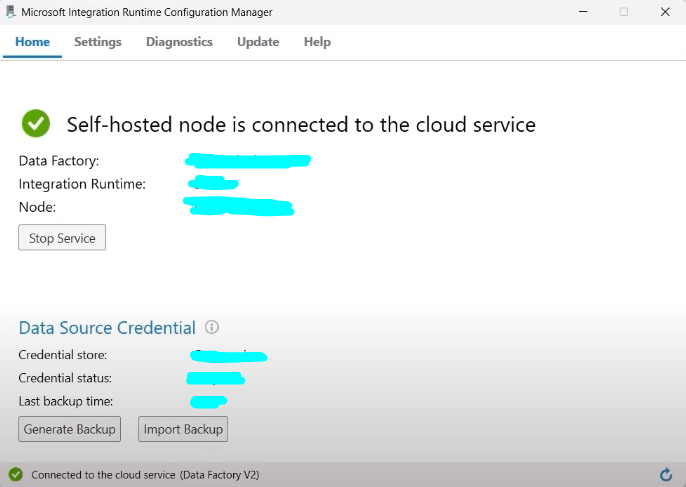
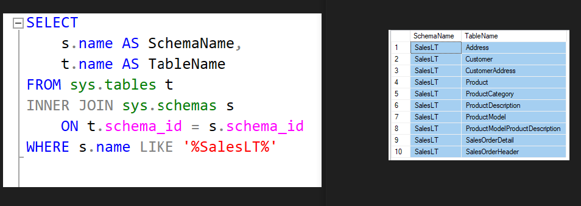
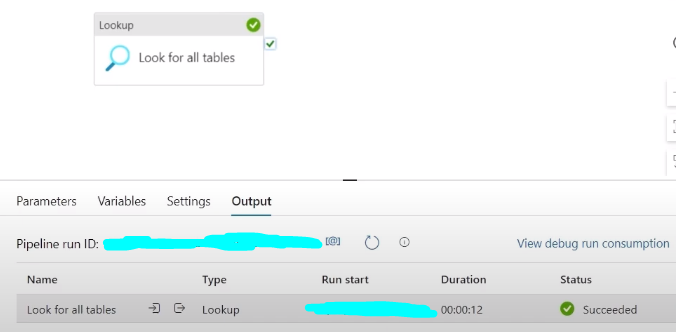
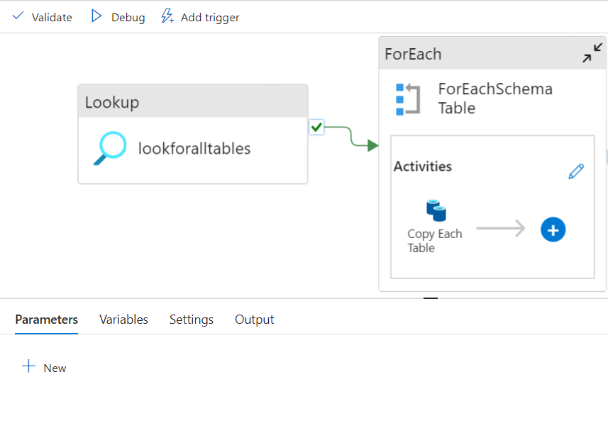
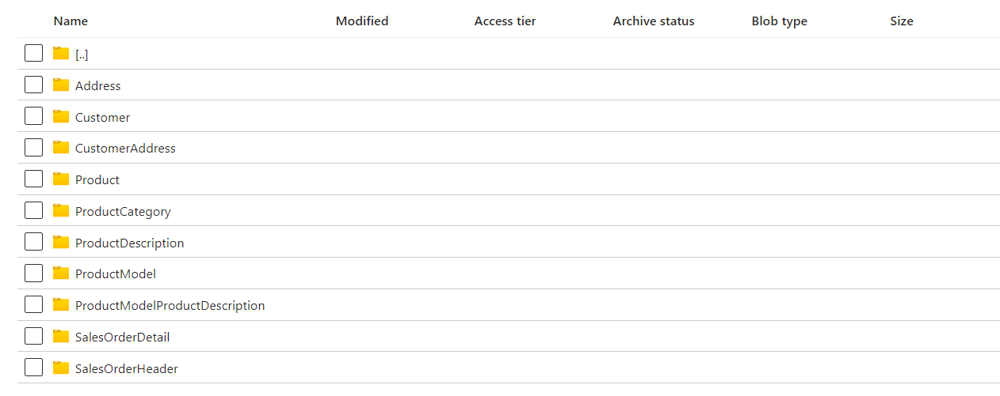
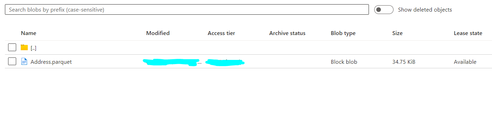

Data Engineering in Azure
This project covers entire Data Engineering process from Ingestion of data to reporting. I focus on cloud-based tools, such as Azure Data Factory, Azure Data Lake, Databricks, PowerBI and so on.
This project covers entire Data Engineering process from Ingestion of data to reporting. I focus on cloud-based tools, such as Azure Data Factory, Azure Data Lake, Databricks, PowerBI and so on.
The data that I will be working with is AdventureWorksLT2017, which provides me lots of possibilities
I hosted this database on my own device, so in order to connect it with Azure I needed self-hosted integration runtime...
The first task was to connect data with Azure. I host this database on my own device, so in order to connect I needed self-hosted integration runtime...
Now when connection is established I can start copying tables using ADF (Azure Data Factory) pipelines...
I started by getting the names of the tables that I wanted to copy:
At the beggining of the pipeline I added "Lookup" method with custom query mentioned above
I continued by adding "ForEach" method:
And the result was following:
 Data Ingestion part of this project was completed!

I'm currently working on this project - stay tuned...